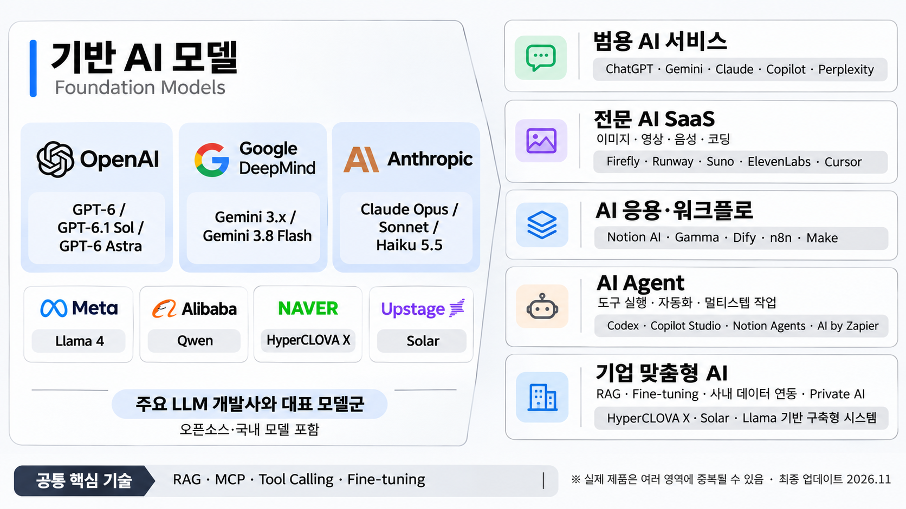
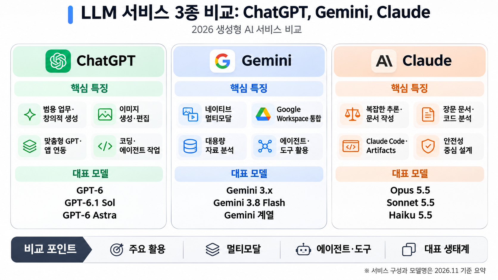
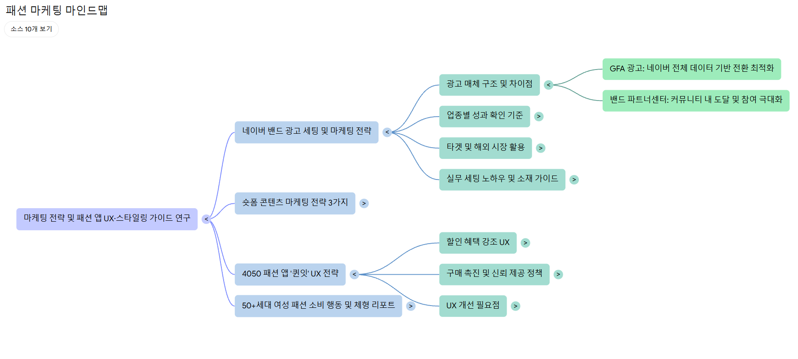
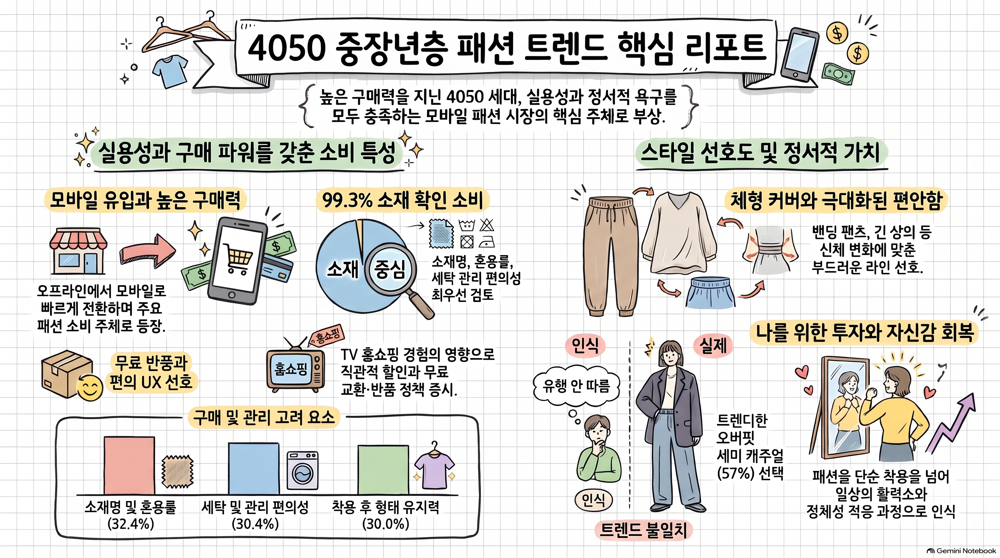
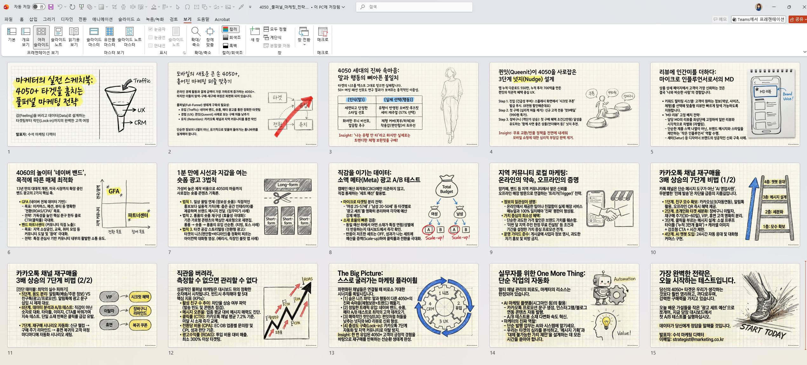
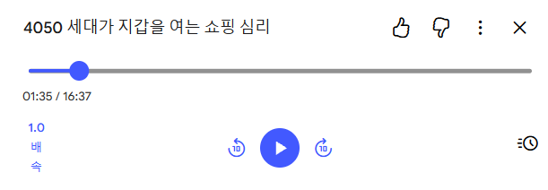
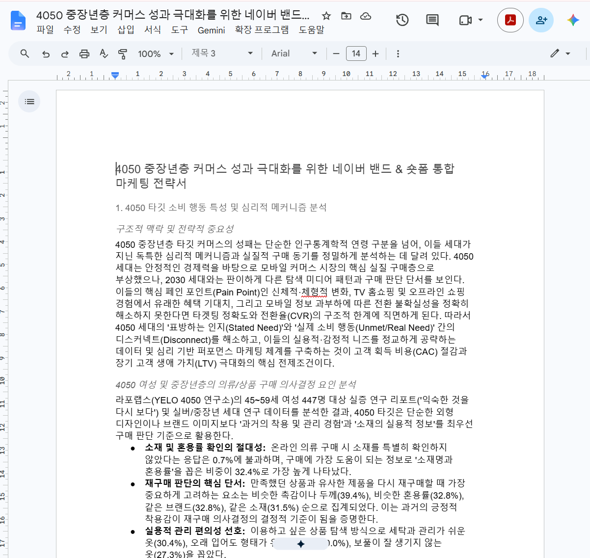
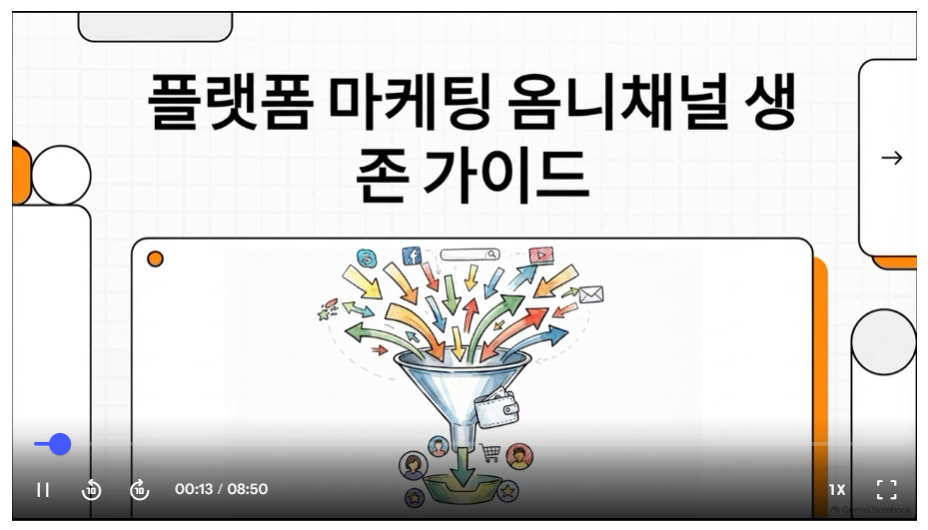

전체 시나리오 기획안
프로젝트 콘셉트, 캐릭터 일관성 설정, 씬별 연출 및 엔딩 카피 기획 전문입니다.
에셋 라이브러리 (Characters & Props)
스토리보드에 적용된 캐릭터, 로케이션, 소품 에셋 목록 및 비주얼 프롬프트 가이드입니다.
스토리보드 콘티 (19 Shots)
씬(Scene)별로 구별된 19개 샷별 AI 콘티와 적용된 캐릭터/소품 에셋, 모션, 사운드 디렉션입니다.
클립별 영상제작 프롬프트 (11 Clips)
Seedance 2.0 스토리보드 콘티 기반으로 정밀 제작된 영상 제작 프롬프트입니다. 각 클립의 [AI 다이렉트 복사] 단추를 클릭하여 비디오 생성 도구에 바로 붙여넣어 영상을 순서대로 제작할 수 있습니다.
클립 제작 결과 (11 Clips Video Showcase)
AI 비디오 생성 도구로 최종 완성된 11개 클립 제작 영상입니다. 씬(Scene 01~06)별 그룹으로 묶여 있어 전체 시네마틱 여정과 씬별 런타임을 한눈에 감상하고 검토할 수 있습니다.
최종 클립연결 영상 (Final Combined Cinematic Video)
11개 클립을 시네마틱 오디오, 현장 대사 및 내레이션, 자막과 함께 완벽하게 마스터링한 최종 완성 영상입니다. 내레이션 포함 풀버전과 자막 전용 클린 버전을 비교 감상할 수 있습니다.
클린 자막 영상 (영상 + 자막)
현장감 넘치는 사운드와 배경음악 위에 정갈한 한글 타이포그래피 자막으로 시청하는 클린 버전 영상입니다.
최종 마스터 영상 (영상 + 자막 + 내레이션)
여성 리더의 공감형 1인칭 내레이션, 시네마틱 BGM 및 사운드 디자인(SFX)이 완벽하게 믹싱된 최종 완성본입니다.
🎬 4K UHD 시네마틱 프로덕션 마스터링 스펙
📈 6단계 시네마틱 서사 구조 & 감정 곡선 (Emotional Arc)
「내가 태어난 날의 대한민국」 AI 기술 분석
생년월일을 넣으면 그날의 날씨·물가·동갑 수·1위 노래까지 보여주는 공공데이터 + AI 서비스의 실제 작동 원리와 기술 구조를 심층 분석합니다.
🎬 AI 기술 분석 설명 영상
차쌤의 通하는 클라스에서 제공하는 「내가 태어난 날의 대한민국」 서비스 속 AI 기술 적용 원리와 분석 해설 영상입니다.
📊 사용자 입력부터 맞춤형 결과까지 인포그래픽
사용자가 생년월일과 지역을 입력했을 때, 공공데이터 조회부터 생성형 AI 모델 연동 및 화면 카드 구성까지 이어지는 파이프라인 흐름도입니다.
💡 핵심 결론
운영자가 공개한 자료에서 ChatGPT 이미지 생성과 Suno 음악 생성을 확인할 수 있습니다. 반면 과거 날씨·물가·교육통계를 보여 주는 주요 기능은 AI 예측보다 공공데이터 조회와 계산(규칙 기반 데이터 매칭)에 가깝습니다.
1. 확인된 AI 기술과 활용 가능 기술
서비스 내 각 기능에 실제로 AI가 적용되었는지, 일반 데이터/웹 기술인지 판정한 종합 매트릭스입니다.
| 기술·기능 | 판정 | 활용 내용과 판단 근거 |
|---|---|---|
| 1. 생성형 이미지 AI | 확인 | 미래의 바다·세대·패션 일러스트를 ChatGPT로 생성했다고 운영자가 명시 |
| 2. AI 음악 생성 | 확인 | 2030~2100년 미래 시대 음악 12곡을 Suno로 제작했다고 명시 |
| 3. AI 기반 개발 (바이브 코딩) | 확인 (제작 과정) | 제작사 ALTO LAB이 AI와 함께 기획부터 배포까지 웹 서비스를 제작한다고 소개 |
| 4. 개인화 추천·콘텐츠 매칭 | 일반 기술 | 생일·지역·학교에 맞는 날씨, 사진, 통계, 문화를 선별. AI 추천 모델일 수도 있지만 규칙 기반 구현도 가능 |
| 5. 자연어 처리 (NLP) | 추정 | 학교 이름을 줄여 입력해도 찾는 기능. 문자열 정규화·유사도 검색일 가능성이 높으며 NLP 모델 사용은 미확인 |
| 6. 예측 분석·시뮬레이션 | 추정 | 타임머신 미래 화면에 미래 추정값과 인구 관련 자료 활용. 머신러닝 예측인지 통계적 외삽인지는 미확인 |
| 7. 데이터 통합·분석 | 일반 기술 | 기상청·국가데이터처·교육통계 등을 날짜와 지역 기준으로 결합. 데이터 분석 기술이지만 AI 모델 사용의 증거는 아님 |
| 8. 이미지 검색·매칭 | 일반 기술 | 과거 지역 사진을 연도·지역과 연결. 이미지 인식 AI 없이도 메타데이터로 처리 가능 |
| 9. 콘텐츠 자동 생성 | 일반 기술 | 입력한 생일에 따른 여러 결과 카드를 자동 구성. LLM 생성이 아닌 템플릿 기반 구현도 가능 |
| 10. 사용자 행동 분석 | 일반 기술 | 방문·카드 배치·공유 등의 이용 패턴을 분석해 화면 개선에 활용. AI 기반 분석 여부는 미확인 |
2. 실제 AI가 적용된 부분과 구체적 근거
미래 도시의 바다 그림, 시대별 세대 이미지, 미래 패션 이미지를 생성하는 데 사용했습니다.
2030~2100년 미래 시대를 상상한 음악 12곡을 AI로 제작했습니다.
AI를 적극적으로 활용한 기획·개발·배포 방식입니다. (Claude Code, Cursor 등 최신 AI 코딩 도구 활용)
3. AI와 결합된 주요 웹·데이터 기술
실제 서비스를 구현하는 데 있어 생성형 AI 외에 함께 맞물려 돌아가는 핵심 웹·데이터 엔지니어링 기술들입니다.
| 기술 | AI 여부 | 실제 기능 및 기술 설명 |
|---|---|---|
| 공공데이터 API·데이터셋 | 비AI | 기상청 과거 관측값, 소비자 물가지수, 교육통계 등 신뢰도 높은 공공 데이터 결합 |
| 규칙 기반 개인화 | 비AI | 입력한 날짜·지역 조건과 일치하는 레코드를 1:1로 매칭하여 선별 |
| 천문 계산 알고리즘 | 비AI | 생일 당일의 달의 모양(월령), 일출·일몰 시각, 별자리 좌표 계산 수식 |
| 통계적 추정 | AI 여부 미확인 | 미래 인구·경제 등의 추정치 지표 표시 (통계적 추세선 모델 활용 가능성) |
| 3D 그래픽 (WebGL) | 비AI | 2026년 10월 30일부터 제공되는 ‘그날의 거리’ 3D 인터랙티브 공간 테스트 |
| 실시간 통신 (WebRTC) | 비AI | 같은 연대 거리에 접속한 사용자 간의 실시간 브라우저 연결 지원 |
| 데이터 시각화 | 비AI | 과거 통계와 미래 수치를 카드 및 세련된 그래픽 UI로 표시 |
💬 운영자 인터뷰 및 기술 해설 : "결과 계산이 서버의 대형 AI가 아니라 사용자의 브라우저에서 가볍게 이루어지며, 공개 데이터 파일을 받아 필요한 값을 선택합니다. 따라서 개인별 결과가 자동 생성된다는 사실만으로 모든 것이 AI에 의해 실시간 추론된다고 오해하지 않는 것이 중요합니다."
1. 생성형 AI 시장의 맥락 보기
급변하는 생성형 AI 생태계 흐름과 주요 LLM 비교, 그리고 기업 리더에게 필요한 AI 리터러시 5대 핵심 역량을 체계적으로 분석합니다.
AI 생태계 조망 & 글로벌 대표 LLM 3종 비교
국내외 반도체·클라우드 인프라부터 모델, 에이전트 서비스에 이르는 AI 밸류체인을 이해하고, 대표적인 거대언어모델(LLM) 3종의 특장점을 비교 분석합니다.

칩셋·인프라부터 파운데이션 모델, AI Agent 서비스까지 대한민국 AI 산업의 전체 지형도

기획과 창의성(ChatGPT), 구글 도구 연동 및 최신 정보(Gemini), 정밀한 문서 분석과 코딩(Claude)
1. AI 리터러시란 무엇인가?
AI 리터러시(Artificial Intelligence Literacy)란 인공지능의 기본 원리와 특성을 이해하고, AI 도구를 목적에 맞게 활용하며, AI가 생성한 결과를 비판적으로 평가하고, 윤리적·책임감 있게 활용하여 실제 비즈니스 문제를 해결할 수 있는 종합적인 역량을 의미합니다.
과거 디지털 리터러시가 디지털 기기와 정보를 이해하고 활용하는 능력에 중점을 두었다면, AI 리터러시는 여기에 AI와의 상호작용, 결과 검증, 인간의 판단과 통제, AI를 활용한 문제해결 능력을 포괄합니다.
✦ AI 리터러시 5가지 핵심 요소
AI의 기본 개념·원리·한계 이해
AI 서비스와 기능을 목적에 맞게 선택·활용
효과적인 프롬프트 설계와 결과 개선
사실 검증, 편향 인식, 개인정보·저작권 보호
AI와 협력해 실제 문제의 해결책 설계
2. AI 리터러시의 5대 핵심 역량 매트릭스
앞서 살펴본 생성형 AI 생태계 및 LLM 3종 비교 내용을 기업 실무와 리더십 교육에 바로 적용할 수 있도록 정리한 실무 중심 5대 핵심 역량 통합 분류안입니다.
| 핵심 영역 | 세부 역량 | 실제 비즈니스 활용 예시 |
|---|---|---|
| ① AI 개념 이해 | AI·LLM의 기본 원리, 모델과 서비스 구분, 성능과 한계 이해 | GPT와 ChatGPT의 차이 설명, 생성형 AI 오류(환각) 원인 이해 |
| ② AI 도구 활용 | 목적별 AI 서비스 선택, 멀티모달 기능 활용, 업무 도구 연동 | ChatGPT로 기획안 작성, Gemini로 Google Workspace 연동, Claude로 대용량 문서 분석 |
| ③ AI 상호작용 및 생성 | 프롬프트 설계, 반복 개선(Iterative Prompting), 생성 콘텐츠 평가·편집 | 역할·맥락·출력 형식을 지정해 맞춤형 보고서, 마케팅 문구 및 이미지 생성 |
| ④ AI 윤리·안전·비판적 평가 | 사실 검증(Grounding), 편향 인식, 개인정보 보호, 저작권, 책임 있는 활용 | AI 답변 출처 크로스 체크, 기업 기밀 및 고객 개인정보 입력 방지 |
| ⑤ AI 기반 문제해결·창의 | 문제 정의, AI 활용 전략 수립, 워크플로 설계, 성과 평가 | 반복 행정·CS 업무 자동화 파이프라인 구축, AI Agent를 활용한 업무 혁신 |
📚 참고할 주요 글로벌 기준
- Long, D., & Magerko, B. (2020): What Is AI Literacy? Competencies and Design Considerations (ACM CHI)
- UNESCO (2024): AI Competency Framework for Students
- European Union (2024): Regulation (EU) 2024/1689 (Artificial Intelligence Act), Article 4
- OECD & European Commission: AI Literacy 교육 프레임워크 가이드라인
2. 핵심 전략 1 - 제대로 질문하기 (복습)
AI에게 명확한 방향성과 제약을 주어 신뢰도 높은 최적의 결과물을 이끌어내는 「프롬프트 공식 4+2」 프레임워크와 실전 Before & After 사례입니다.
1. 「프롬프트 공식 4+2」 프레임워크
생성형 AI로부터 신뢰성 높은 고품질의 답변을 얻기 위한 표준 프레임워크입니다.
기본 답변의 뼈대를 이루는 핵심 요소 4개(역·배·지·형)와, 환각을 줄이고 정밀도를 극대화하는 추가 보강 요소 2개(조·샘)로 구성됩니다.
🧱 핵심 4대 요소 (뼈대 : 역·배·지·형)
AI에게 명확한 방향성과 구조를 제공하기 위해 반드시 포함해야 하는 4가지 기본 요소입니다.
| 핵심 요소 | 정의 및 역할 | 작성 팁 & 예시 문구 | 영문 |
|---|---|---|---|
| 1. 역할 (Role) | AI에게 부여할 전문가 역할과 관점 설정 | • "너는 15년 경력의 중소기업 경영 컨설턴트야." • "온라인 마케팅 전문가의 관점에서 조언해 줘." |
Persona |
| 2. 배경 (Context) | 기업의 사업 현황, 고객 특성, 현재 고민 등 상황 설명 | • "나는 직원 10명 규모의 화장품 제조기업을 운영하는 대표야." • "40~50대 여성을 주요 고객으로 하는 온라인 쇼핑몰을 운영하고 있어." |
Situation |
| 3. 지시 (Task) | AI가 수행해야 할 구체적인 업무와 원하는 결과 제시 | • "신규 고객 확보를 위한 마케팅 전략 3가지를 제안해 줘." • "우리 회사의 매출을 높일 수 있는 실천 방안을 분석해 줘." |
Instruction |
| 4. 형식 (Format) | 답변을 활용하기 쉬운 보고서, 표, 메시지 등 결과물 형태 지정 | • "전략별 기대 효과와 실행 방법을 표로 정리해 줘." • "직원 회의에서 공유할 수 있도록 핵심 내용을 5줄로 요약해 줘." • "고객에게 발송할 카카오톡 안내문 형식으로 작성해 줘." |
Layout |
🎯 추가하면 좋은 2대 요소 (보강재 : 조·샘)
답변의 오차(환각 현상)를 줄이고, 사용자의 의도에 100% 부합하는 맞춤형 결과를 완성하는 핵심 보강 요소입니다.
| 추가 요소 | 정의 및 역할 | 작성 팁 & 예시 문구 | 영문 |
|---|---|---|---|
| 5. 조건 (Constraint) | 답변에 반드시 반영할 예산, 기간, 분량, 표현 방식, 제한사항 설정 | • "마케팅 예산은 월 100만 원 이내로 제한해 줘." • "직원 5명 이하의 소규모 기업에서도 실행 가능한 방법만 제안해 줘." • "확인되지 않은 통계나 시장 수치는 임의로 만들지 마." |
Rules |
| 6. 샘플 (Example) | 원하는 결과의 예시 문장이나 기존 자료를 제공하여 답변 완성도 향상 | • "다음 형식을 참고해 작성해 줘: [전략명] → [실행 방법] → [예상 비용] → [기대 효과]" • "아래에 첨부한 기존 고객 안내문의 친근하고 신뢰감 있는 말투를 유지해 줘." |
Few-shot |
💡 실전 비교 (Before vs After)
단순 지시형 프롬프트와 4+2 공식을 결합한 프롬프트의 품질 차이를 비교해 보세요. 우측 '복사' 버튼으로 고품질 프롬프트를 복사하여 바로 테스트할 수 있습니다.
[사례 1] 여성 의류 온라인 쇼핑몰 매출 성장 전략
"우리 회사 매출을 높이는 방법 알려줘."
⚠️ 결과 : 기업의 규모와 예산, 고객 연령대가 전혀 고려되지 않은 일반적이고 추상적인 마케팅 교과서 내용만 나열됨
✨ 결과 : 4050 여성 타깃과 100만 원 예산에 딱 맞는 즉시 실행 가능한 표 형태의 현실적 전략 제안 도출
[사례 2] 공공데이터 기반 부산 상권 분석 및 카페 창업 컨설팅
"우리 지역에서 창업하기 좋은 업종을 알려줘."
⚠️ 결과 : 구체적인 지역 데이터나 근거 없이 일반적인 창업 아이디어만 나열되어 의사결정에 활용 불가
✨ 결과 : 부산 공공데이터 기준의 유동인구 및 경쟁 점포 분석이 적용된 객관적 창업 후보지 표 완성
⚡ CEO 맞춤 AI [역할] 추천 생성기
어떤 업무를 해결하고 싶으신가요? 키워드나 일상 문장을 입력하시면, AI에게 부여할 최적의 3대 전문 역할 페르소나와 4+2 결합 프롬프트를 즉시 추천해 드립니다.
3. 핵심 전략 2 - 선택과 연결하기
기업의 핵심 출처 자료(Source)를 AI와 연결하여 마인드맵, 인포그래픽, 발표 슬라이드, 오디오 팟캐스트, 영상까지 원스톱으로 확장하는 멀티모달 지식 워크플로입니다.
1. 노트북LM(NotebookLM)이란?
사용자가 업로드한 자료(Source: PDF, 웹페이지 링크, 구글 문서, 텍스트 메모 등)를 기반으로 질문에 정확히 답변하고, 다양한 형태의 지식 콘텐츠를 자동 생성해 주는 구글의 AI 리서치 & 협업 파트너입니다.
일반 챗봇과 달리 내가 제공한 출처 내에서만 답변(Grounding)하므로 거짓 정보(환각)가 극히 적고, 답변마다 정확한 원본 각주(Citation)를 제공합니다.
✦ 노트북LM으로 제작할 수 있는 주요 콘텐츠 6종 쇼케이스
업로드된 하나의 소스로부터 즉시 확장 생성된 실제 산출물 사례입니다.

🧠 구조화된 마인드 맵
방대한 사업 계획서나 시장 보고서의 핵심 개념과 위계 구조를 한눈에 파악할 수 있는 시각적 트리 다이어그램

📊 트렌드 리포트 인포그래픽
4050 여성 패션 트렌드 보고서의 핵심 통계치와 고객 행동 패턴을 압축 정리한 고해상도 인포그래픽

📑 강의 및 발표용 슬라이드
자료를 기반으로 청중의 이해도를 극대화하는 키노트 슬라이드 자동 구성 및 프롬프트 최적화

🎙️ AI 오디오 팟캐스트
두 명의 AI 진행자가 자료의 핵심을 서로 질문하고 토론하며 알기 쉽게 브리핑하는 음성 팟캐스트

📝 임원 보고서 및 스터디 가이드
출처 각주와 함께 신뢰할 수 있는 요약본, FAQ, 비즈니스 타임라인을 체계적으로 서술한 보고서

🎬 AI 비디오 및 쇼츠 스토리 연계
노트북LM에서 정제된 스토리를 영상 제작 프롬프트로 변환하여 런웨이, 클링 등 영상 AI로 확장 연결
2. 노트북LM 접속 & 3단계 핵심 워크플로
구글 계정만 있으면 누구나 무료로 사용할 수 있는 노트북LM의 주요 화면 구성과 3단계 워크플로를 소개합니다.
좌측 패널에서 PDF, 웹 링크, 구글 문서, 유튜브 영상 링크 등 최대 50개의 출처 자료를 손쉽게 추가합니다.
중앙 채팅창에 질문하면 업로드한 자료만을 근거로 정확히 답변하며, 번호 각주를 눌러 원본 위치를 즉시 확인합니다.
우측 스튜디오 패널에서 클릭 한 번으로 오디오 오버뷰, 스터디 가이드, 브리핑 문서, 개요를 자동 생성합니다.